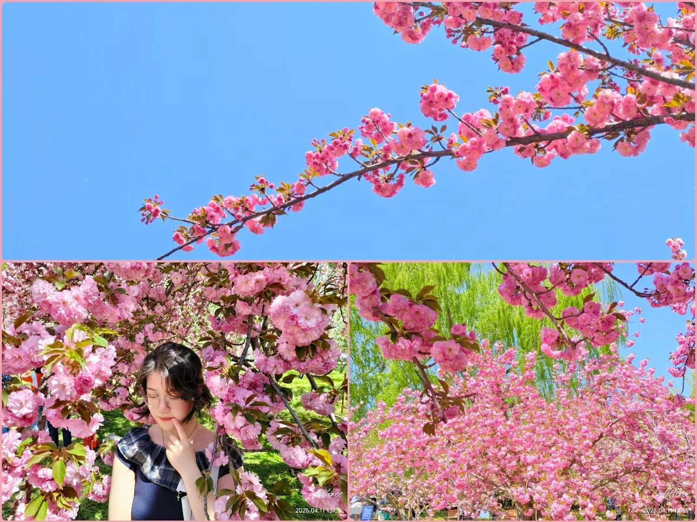

汪丽芳
Wang Lifang中国石油大学（北京） · 思想政治教育 · 大二在读
有社区宣讲、校园活动策划与胡同文化活化项目经历。
做过问卷和访谈，写过活动策划案、公告、新闻稿，也负责过PPT制作和活动排期。
内容策划产品运营活动运营市场营销

生活里的我Wang Lifang
- 教育背景
- 中国石油大学（北京）本科
- 毕业时间 / 成绩
- 2029届 · 均分87/100
- 到岗与时长
- 每周4–5天 · 连续3个月
- 意向城市 / 入职时间
- 北京 · 录用后一周内到岗
项目与作品
策划方案、活动现场和实际交付的材料，都放在这里。
2026.03 — 2026.06胡同门楼
胡同门楼
记忆走廊
围绕胡同空间与文化传播，完成调研、内容整理、体验路线及文商共生方案。

2025.09 — 2026.10校园活动
校园活动
策划与展示材料
迎新晚会策划案、展示PPT、主持稿与现场执行工具。

经历与技能
思政专业背景 + 定量研究方法训练
实践经历
荣景社区｜社区实践
承担公益托管与基层宣传，安排课程、撰写通知、协调高校宣讲资源，参与活动记录与社区公示。
胡同活化·文商共生｜项目队长
统筹分工与进度，对接指导老师及社区方，参与走访调研、方案整理和答辩PPT制作。
校团委 / 学生会｜校内实践
参与校园活动策划、展示材料制作与现场支持，协助普通话水平测试考务。
我使用的方法和工具
- 调研与数据分析
- 问卷设计、深度访谈；SPSS描述统计与交叉分析；Excel数据透视表与图表可视化。
- 文案与活动策划
- 活动策划案、公告、通知、新闻稿及推文编辑；PPT制作与视觉美化；Word长文档排版。
- 内容创作工具
- Canva、Photoshop、剪映、秀米、135编辑器。
- 课程与语言
- 社会调查与统计、社会心理学、社会学概论；大学英语四级。